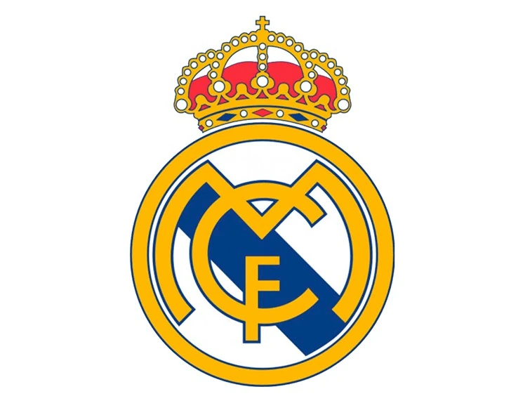
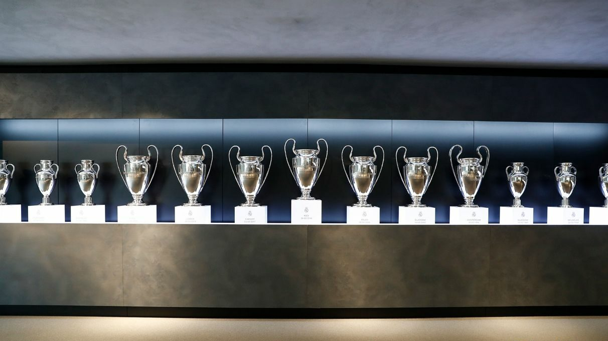
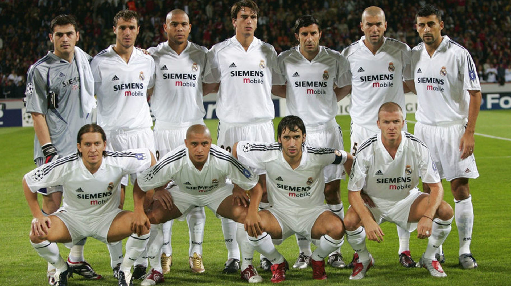
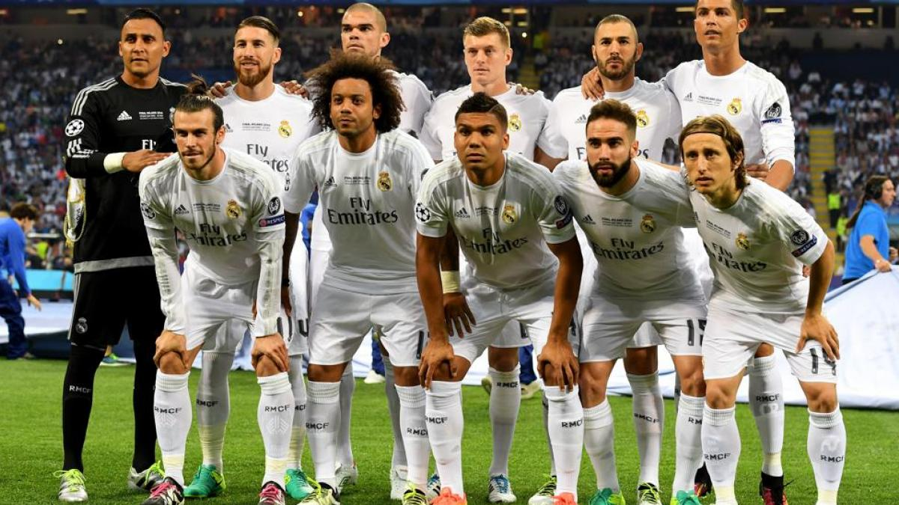
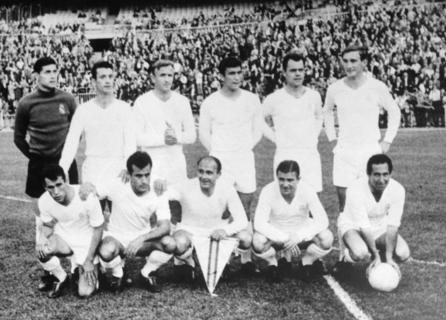
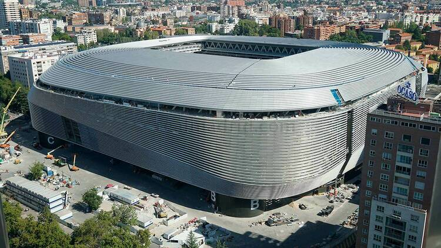
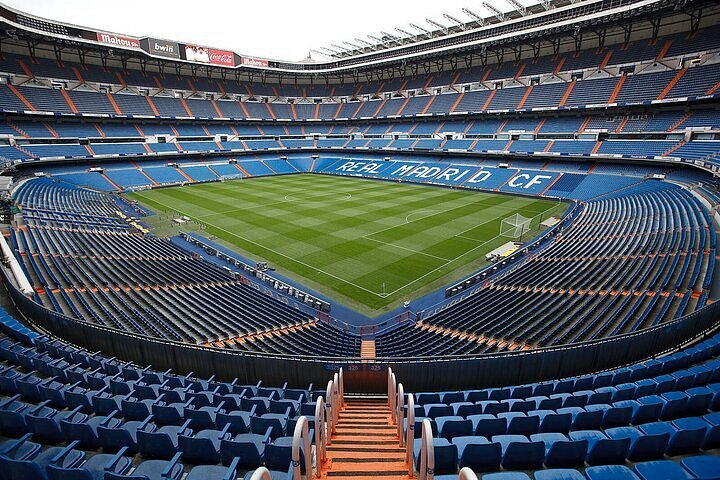

El Real Madrid: El Rey de Europa en 100 palabras Fundado en 1902, el Real Madrid es más que un club de fútbol; es la institución deportiva más laureada de la historia. Elegido por la FIFA como el Mejor Club del Siglo XX, su leyenda se cimenta en una ambición innegociable y un palmarés inigualable que incluye 15 Copas de Europa. Desde la mística del Santiago Bernabéu hasta la excelencia de su actual constelación de estrellas como Mbappé, Vinícius y Bellingham, el conjunto blanco representa la cima del éxito mundial.
Bienvenidos al análisis del club donde "ganar es lo único que importa".

Fundado en 1902 como Madrid Club de Fútbol, el club tradicionalmente ha vestido la equipación blanca de local.
El título honorífico «Real» significa «Real» en español y fue otorgado por Alfonso XIII en 1920. El Real Madrid
ha jugado sus partidos como local en el Estadio Santiago Bernabéu desde 1947.
El Real Madrid fue reconocido como el mejor club de fútbol del siglo
XX, recibiendo la Orden del Mérito del Centenario de la FIFA en 2004. El Real Madrid tiene el mayor número de
participaciones en la Copa de Europa/Liga de Campeones de la UEFA (55), torneo en el que ostenta los récords de
más victorias, empates y goles marcados.
El Real Madrid ha ganado más campeonatos de la Primera División española (36) que cualquier otro equipo español. El club también ha ganado la Copa del Rey, la principal competición de copa española, 20 veces y la Supercopa de España 13 veces. Ganó la Copa de la UEFA dos veces, en 1985 y 1986.

Equipos



La historia del club se divide en grandes eras marcadas por sus éxitos continentales y nacionales: El Madrid de las 5 Copas de Europa (1955-1960): Liderado por Alfredo Di Stéfano y Ferenc Puskás, el club ganó las primeras cinco ediciones del torneo de forma consecutiva, estableciendo su leyenda como el "Rey de Europa". La Época de "Los Galácticos" (2000-2006): Bajo la presidencia de Florentino Pérez, el club reunió a estrellas como Zidane, Ronaldo Nazário, Figo y Beckham, conquistando la novena Champions League en 2002. La Era de las 3 Champions Seguidas (2014-2018): Con Cristiano Ronaldo como máximo goleador histórico, el equipo logró un hito moderno al ganar tres Ligas de Campeones consecutivas bajo el mando de Zinedine Zidane. Palmarés Actualizado (a marzo de 2026): El club suma 15 Champions League, 36 Ligas, 20 Copas del Rey y 9 títulos mundiales (entre Copas Intercontinentales y Mundiales de Clubes)
El Santiago Bernabéu


El Estadio Santiago Bernabéu, ubicado en el distrito de Chamartín, es la sede histórica del club y ha sido
recientemente transformado en uno de los recintos más modernos del mundo.
Capacidad y Categoría: Tiene capacidad para más de 81.000 espectadores y cuenta con la máxima categoría de la
UEFA.
Innovación: Su remodelación incluyó tecnologías avanzadas para el cuidado del césped y una estructura
espectacular que lo posiciona como un icono turístico y económico de Madrid.
Historia: Inaugurado en 1947, lleva el nombre de Santiago Bernabéu, quien fue jugador, entrenador y presidente
del club.
Eventos: Además de ser la casa del Real Madrid, ha albergado 36 finales de la Copa de España y finales de
competiciones internacionales como la Copa de la UEFA.